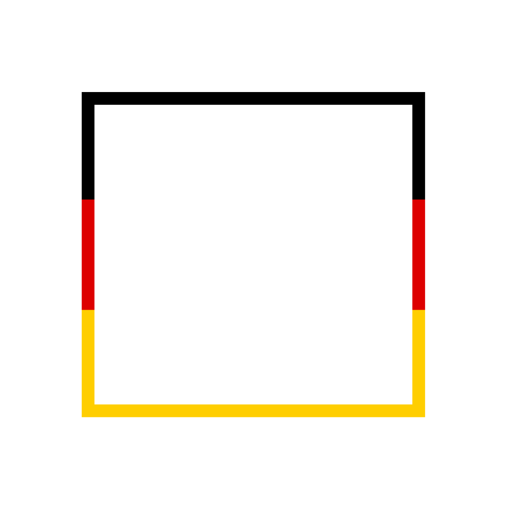

<nav class="navbar navbar-expand-lg navbar-light fixed-top shadow-sm" id="mainNav" style="padding: 0.35rem 0.7rem;">
    <div class="container px-3.5">
        <a class="navbar-brand fw-bold" href="index.html">
            
        </a>
        <span style="font-weight: 900; font-family: 'Work Sans', sans-serif; color: white; font-size: 1.6rem;">Partei fürs Volk</span>
        <button class="navbar-toggler" type="button" data-bs-toggle="collapse" data-bs-target="#navbarResponsive" aria-controls="navbarResponsive" aria-expanded="false" aria-label="Toggle navigation">
            Menu
            <i class="bi-list"></i>
        </button>
        <div class="collapse navbar-collapse" id="navbarResponsive">
            <ul class="navbar-nav ms-auto me-2.8 my-2.1 my-lg-0">
                <li class="nav-item"><a class="nav-link me-lg-2.1 fw-semibold" href="index.html#about">Über Uns</a></li>
                <li class="nav-item"><a class="nav-link me-lg-2.1 fw-semibold" href="parteiprogramm.html">Parteiprogramm</a></li>
                <li class="nav-item dropdown">
                    <a class="nav-link me-lg-2.1 fw-semibold dropdown-toggle" href="index.html#policies" id="navbarDropdown" role="button" data-bs-toggle="dropdown" aria-expanded="false">
                        Themen
                    </a>
                    <ul class="dropdown-menu" aria-labelledby="navbarDropdown">
                        <li><a class="dropdown-item" href="index.html#policy1">Thema 1</a></li>
                        <li><a class="dropdown-item" href="index.html#policy2">Thema 2</a></li>
                        <li><a class="dropdown-item" href="index.html#policy3">Thema 3</a></li>
                    </ul>
                </li>
                <li class="nav-item"><a class="nav-link me-lg-2.1 fw-semibold" href="index.html#events">Veranstaltungen</a></li>
                <li class="nav-item dropdown">
                    <a class="nav-link me-lg-2.1 fw-semibold dropdown-toggle" href="index.html#policies" id="navbarDropdown" role="button" data-bs-toggle="dropdown" aria-expanded="false">
                        Partei
                    </a>
                    <ul class="dropdown-menu" aria-labelledby="navbarDropdown">
                        <li><a class="dropdown-item" href="kontakt.html">Kontakt</a></li>
                        <li><a class="dropdown-item" href="Mitglieder.html">Wichtige Mitglieder</a></li>
                        <li><a class="dropdown-item" href="index.html#policy2">Thema 2</a></li>
                        <li><a class="dropdown-item" href="index.html#policy3">Für Mitglieder</a></li>
                    </ul>
                </li>
            </ul>
        </div>
    </div>
</nav>
<style>
    .navbar-brand img:hover {
        transform: scale(1.05);
    }
    .nav-link:hover {
        transform: scale(1.05);
        transition: transform 0.2s;
    }
</style>
